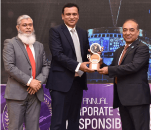

Indus Motor Company Limited (IMC) is a joint venture between certain companies of House of
Habib of Pakistan, Toyota Motor Corporation (TMC), and Toyota Tsusho Corporation (TTC) of
Japan. Incorporated in 1989, the Company manufactures and markets Toyota brand vehicles in
Pakistan. These include several variants of the flagship Corolla and Yaris in the passenger car
segment, Hilux in the light commercial vehicle segment, Fortuner and Corolla Cross in the
sports utility vehicle segment.
IMC’s manufacturing facility and offices are located at a
109.5-acre site in Port Qasim, Karachi. The product is delivered to end customers nationwide
through a strong network of 57 independent authorized 3S dealerships spread across the country.
Over 34 years, since inception, IMC has sold more than 1.1 million CKD/CBU vehicles. It has also
demonstrated impressive growth in terms of volumetric increase. From a modest beginning of 20
vehicles per day production in 1993, the daily production capacity of the Company on double shift
basis increased to 288 (with overtime) units per day. This has been made possible through the
development of human talent embracing the “Toyota Way” of quality and lean manufacturing. |
 |